Molecular Stereochemistry 2
Chapter H3.5 · Molecular Stereochemistry Part 2
On this page
- Configuration and conformation
- Key terms
- The Cahn–Ingold–Prelog (CIP) priority rules
- Cis-trans isomerism and E/Z naming
- R/S configuration
- Enantiomers and diastereomers
- Meso compounds
- Stereoisomers of disubstituted rings
- Optical activity and specific rotation
- Optical purity and enantiomeric excess
- Stereoisomerism in transition element complexes
- Cis-trans isomers of complexes
- Enantiomers of complexes
- Summary
Configuration and conformation
Part 1 was about conformations: shapes that change into one another simply by rotation about single bonds (or by a ring flip). This Part is about configurations: arrangements of atoms in space that can be changed only by breaking and re-forming bonds. cis-trans isomers and enantiomers are different configurations.
Fig 17 puts all the kinds of isomerism of this chapter together. Topic 11.1 Part 2 introduced cis-trans isomers and chiral centres; here we learn to name configurations without ambiguity (E and Z, R and S), to count stereoisomers, to measure how pure an enantiomer is, and to recognise stereoisomers of complexes.
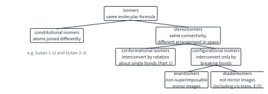
Key terms
You will use these terms in this Part.
| Term | Meaning |
|---|---|
| Configuration | The arrangement of atoms in space that can be changed only by breaking and re-forming bonds. |
| Stereoisomers | Isomers with the same atoms joined in the same order, but arranged differently in space. |
| cis-trans isomerism | Stereoisomerism caused by restricted rotation (a C=C bond or a ring), with two different groups on each carbon involved. |
| E and Z | Names for the configuration of a C=C bond: Z when the higher-priority groups are on the same side, E when they are on opposite sides. |
| Cahn–Ingold–Prelog (CIP) priority rules | Rules that rank the groups on an atom, from 1 (highest) to 4, by atomic number. |
| Chiral centre | A carbon atom with four different atoms or groups attached; marked *. |
| Chiral, achiral | Chiral: not superimposable on its mirror image. Achiral: superimposable on its mirror image (for example, because it has a plane of symmetry). |
| R and S | Names for the configuration of a chiral centre, from the CIP priorities. |
| Enantiomers | Stereoisomers that are non-superimposable mirror images of each other. |
| Diastereomers | Stereoisomers that are not mirror images of each other. |
| Meso compound | A compound whose molecules contain chiral centres but are superimposable on their mirror image; it is achiral and optically inactive. |
| Racemic mixture (racemate) | A 50 : 50 mixture of two enantiomers; optically inactive. |
| Optically active | Able to rotate the plane of plane-polarised light. |
| Plane-polarised light | Light whose electric field oscillates in one plane only. |
| Specific rotation, [α] | The rotation by a sample of standard path length and concentration, under stated conditions: [α] = α / (l × c). |
| Optical purity | [α]obs / [α]pure × 100 %: how far a sample is from a racemic mixture towards one pure enantiomer. |
| Enantiomeric excess (ee) | % of the major enantiomer − % of the minor enantiomer. |
| Bidentate ligand | A ligand that forms two dative bonds to the same metal ion, from two different donor atoms. |
| Square planar | A shape with four ligands at the corners of a square around the metal ion, all in one plane, at 90° to each other. |
The Cahn–Ingold–Prelog (CIP) priority rules
To name a configuration we first need to put the groups on an atom in order. The Cahn–Ingold–Prelog (CIP) priority rules do this, giving each group a priority from 1 (highest) to 4 (lowest).
Worked example 1: CIP priorities
Rank the groups on the chiral centre of (a) butan-2-ol, (b) alanine (2-aminopropanoic acid), (c) 2-bromobutane and (d) C5 of carvone (Fig 18).
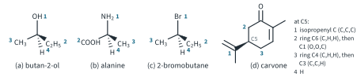
(To answer this, you have to look first at the atoms joined directly to the chiral centre, and go further out only when two of them are the same.)
- (a) Butan-2-ol, CH3CH(OH)CH2CH3: O (8) beats C (6) beats H (1). The two C atoms tie, so list what is on each: C2H5 has (C,H,H), CH3 has (H,H,H). C beats H at the first point of difference. OH > C2H5 > CH3 > H.
- (b) Alanine, CH3CH(NH2)COOH: N (7) is first. COOH and CH3 tie at C; COOH counts as C(O,O,O) by rule 3 (the C=O gives two O, the OH a third), against (H,H,H). NH2 > COOH > CH3 > H.
- (c) 2-Bromobutane: Br > C2H5 > CH3 > H, as for butan-2-ol.
- (d) Carvone, C5: three of the groups are carbon. The isopropenyl carbon, C(=CH2)CH3, has (C,C,C) (rule 3 counts the =CH2 twice), so it is 1. The two ring CH2 groups (C4 and C6) both have (C,H,H): a tie. Move one atom further out: from C6 we reach C1, the C=O carbon, which has (O,O,C); from C4 we reach C3, which has (C,C,H) (C3=C2 counts twice). O beats C, so the C6 branch is 2 and the C4 branch is 3; H is 4.
Cis-trans isomerism and E/Z naming
Topic 11.1 Part 2 showed that rotation about a C=C bond is restricted (turning one end would break the π bond, about 260 kJ mol−1), so an alkene has cis-trans isomers when each carbon of the C=C carries two different groups. cis means the two similar groups are on the same side; trans means they are on opposite sides.
cis and trans work well for but-2-ene, but they are no use when there are three or four different groups on the C=C. The general method uses the CIP rules:
Worked example 2: E or Z
Name the isomers of (a) but-2-ene, (b) 2-bromobut-2-ene, CH3CBr=CHCH3, and (c) 1-bromo-1-chloropropene, BrClC=CHCH3 (Fig 19).
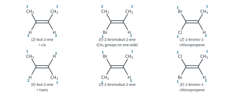
(To answer this, you have to rank the two groups on each carbon separately, then compare the positions of the two groups ranked 1.)
- (a) On each carbon CH3 > H. cis-but-2-ene has the CH3 groups on the same side: (Z)-but-2-ene. trans-but-2-ene is (E)-but-2-ene.
- (b) On C2, Br (35) > CH3; on C3, CH3 > H. In the isomer with the two CH3 groups on the same side, Br and the CH3 on C3 are on opposite sides: it is (E)-2-bromobut-2-ene, although its methyl groups are "cis". The other isomer is (Z).
- (c) On C1, Br > Cl; on C2, CH3 > H. No group appears on both carbons, so cis and trans have no meaning here, but E and Z name both isomers.
Because cis-trans isomers are not mirror images of each other, they are diastereomers, a term defined later in this Part. They have different physical properties: for example, their 1H NMR spectra differ.2
R/S configuration
A chiral centre (Topic 11.1 Part 2) is a carbon atom with four different groups.3 Its two mirror-image arrangements are named R and S:
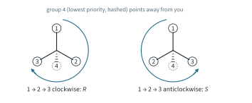
Turning a model in your head is error-prone, so use one of three shortcuts, depending on where group 4 is drawn:
- group 4 on a hashed wedge (away from you): read 1 → 2 → 3 directly;
- group 4 on a solid wedge (towards you): read the direction and reverse it;
- group 4 in the plane of the page: swap group 4 with the group on the hashed wedge, read the new drawing, then reverse (one swap of two groups always gives the enantiomer).
Worked example 3: R or S from a drawing
Assign R or S to the chiral centres in Fig 21(a) to (c).
(To answer this, you have to number the groups first, then find group 4 before you read the direction.)
- (a) Butan-2-ol: OH 1, C2H5 2, CH3 3, H 4 (worked example 1). H is on the hash, so read directly: 1 (up) → 2 (lower right) → 3 (left) is clockwise: (R)-butan-2-ol.
- (b) Alanine: NH2 1, COOH 2, CH3 3, H 4. H is on the wedge. 1 (up) → 2 (down) → 3 (left) is clockwise, so reverse: (S)-alanine, the alanine found in proteins (L-alanine).
- (c) 2-Bromobutane: Br 1, C2H5 2, CH3 3, H 4. H is in the page, at the top. Swap it with CH3 on the hash: now H is on the hash and CH3 at the top, and 1 (left) → 2 (lower right) → 3 (up) is anticlockwise, S. Reverse for the swap: (R)-2-bromobutane.
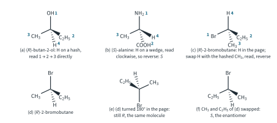
Comparing two drawings
9813 asks you to interpret stereochemical projections, and the commonest question is whether two drawings show the same compound. Assign R or S to every chiral centre in each drawing:
- the same labels at every centre: the same compound (or the same conformation turned round);
- all labels opposite: enantiomers;
- some, but not all, labels opposite: diastereomers.
Two simple moves help. Turning a drawing in the plane of the page, by any angle, leaves it the same molecule: Fig 21(e) is Fig 21(d) turned through 180°, and both are (R). Swapping any two groups at one centre inverts that centre: in Fig 21(f) CH3 and C2H5 have changed places, and the result is (S)-2-bromobutane, the enantiomer of (d).
Worked example 4: the enantiomers of carvone
Carvone (Topic 11.1 Part 2) has one chiral centre, C5. Using the priorities of worked example 1, (R)-carvone smells of spearmint and (S)-carvone of caraway (Fig 22). Their specific rotations (later in this Part) are equal and opposite: −61 for (R) and +61 for (S) (neat liquids, literature values).
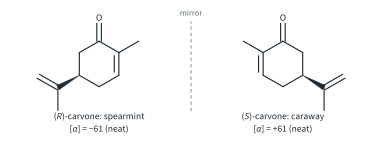
Notice that (R)-carvone is (−) but (S)-alanine is (+) and (R)-butan-2-ol is (−). The sign of rotation, (+) or (−), has no fixed link to R or S: R and S come from a drawing and a rule, while (+) and (−) come from a polarimeter. The sign must be measured. (H3.6 Part 1 shows that SN2 inverts a chiral centre.)
Enantiomers and diastereomers
Stereoisomers come in two kinds:
- enantiomers: non-superimposable mirror images. They have identical physical properties (melting point, boiling point, solubility, NMR spectrum), except that they rotate plane-polarised light in opposite directions and interact differently with other chiral molecules (Topic 11.1 Part 2);
- diastereomers: stereoisomers that are not mirror images. They differ in every physical property, and can be separated by ordinary methods such as crystallisation or chromatography. cis-trans isomers are diastereomers.
The 2n rule
Each chiral centre can be R or S, and each C=C bond with cis-trans isomerism E or Z. So:
Worked example 5: 2-bromo-3-chlorobutane
CH3CHBrCHClCH3 has two chiral centres, C2 and C3. How many stereoisomers are there, and how are they related?
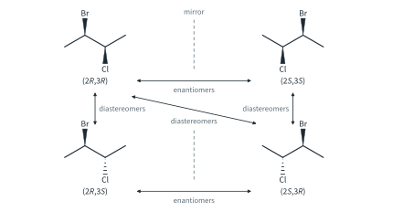
(To answer this, you have to write down every combination of labels, then compare them in pairs.) With two chiral centres there are at most 22 = 4 stereoisomers, and here all four exist: (2R,3R), (2S,3S), (2R,3S) and (2S,3R) (Fig 23). Compare them in pairs:
| (2R,3R) | (2S,3S) | (2R,3S) | (2S,3R) | |
|---|---|---|---|---|
| (2R,3R) | identical | enantiomers | diastereomers | diastereomers |
| (2S,3S) | enantiomers | identical | diastereomers | diastereomers |
| (2R,3S) | diastereomers | diastereomers | identical | enantiomers |
| (2S,3R) | diastereomers | diastereomers | enantiomers | identical |
So there are two pairs of enantiomers, and every other pairing is diastereomeric. The rule of thumb: all centres opposite = enantiomers; some but not all opposite = diastereomers.
Meso compounds
Worked example 6: 2,3-dibromobutane
CH3CHBrCHBrCH3 also has two chiral centres. Show that it has only three stereoisomers.
(To answer this, you have to notice that the two halves of the molecule are the same, so (2R,3S) and (2S,3R) might be one compound.) (2R,3R) and (2S,3S) are non-superimposable mirror images: a pair of enantiomers (Fig 24, top). Now take (2R,3S) and rotate about the C2–C3 bond to the eclipsed conformation with Br behind Br and CH3 behind CH3 (Fig 24(a)). A plane between C2 and C3 cuts the molecule into two mirror-image halves: it has a plane of symmetry, so it is superimposable on its mirror image. Its mirror image, (2S,3R), is the same compound. So there are only 22 − 1 = 3 stereoisomers.
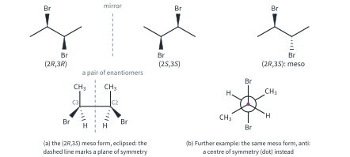
A compound like (2R,3S)-2,3-dibromobutane is a meso compound: its molecules contain chiral centres, but they are superimposable on their mirror image, usually because of an internal plane of symmetry. It is achiral and optically inactive. In a symmetrical molecule the two centres of a meso form have opposite labels.
You may object that the meso form spends most of its time in staggered conformations, which have no plane of symmetry. It does not matter: a molecule that can turn into its own mirror image just by rotating about single bonds (or flipping a ring) is achiral. Further example: the anti conformation of the meso form (Fig 24(b)) has a centre of symmetry instead: every atom has an identical partner directly opposite it through the middle of the C2–C3 bond, and this also makes the molecule superimposable on its mirror image.
Further example: tartaric acid
Tartaric acid, 2,3-dihydroxybutanedioic acid, HOOCCH(OH)CH(OH)COOH, is the classic case (Fig 25). Natural tartaric acid, from grapes, is the (2R,3R) form, dextrorotatory, with [α] about +12 (in water, literature value). Its enantiomer (2S,3S) is (−). The third stereoisomer, (2R,3S), is meso and optically inactive. A racemic mixture of the (R,R) and (S,S) acids is also optically inactive, but it is a mixture. The meso acid and natural tartaric acid are diastereomers, with different melting points and solubilities.
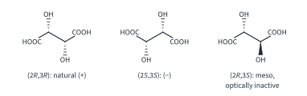
Stereoisomers of disubstituted rings
9813 includes the stereochemistry of saturated ring systems. The rules for chiral centres apply in rings too: the two paths round the ring from a carbon count as different groups if they differ anywhere round the ring. At C1 of 1,2-dimethylcyclohexane one path meets CH(CH3) straight away and the other meets CH2, so C1 (and likewise C2) is a chiral centre. At C1 of 1,4-dimethylcyclohexane both paths are –CH2CH2CH(CH3)–, identical, so C1 is not a chiral centre.4 C1 of methylcyclohexane is not a chiral centre either.
Part 1 showed that rings flip rapidly, so we can use a shortcut:
Worked example 7: the dimethylcyclohexanes
Which of cis- and trans-1,2-dimethylcyclohexane and cis- and trans-1,4-dimethylcyclohexane are chiral? How many stereoisomers does each constitutional isomer have?
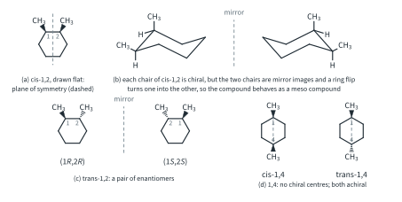
(To answer this, you have to draw each isomer flat and look for a plane of symmetry, then check what the ring flip does.)
- cis-1,2 (Fig 26(a)): two chiral centres, (1R,2S), but drawn flat there is a plane of symmetry between C1 and C2. In 3D each chair of the cis compound is chiral, but a ring flip turns it into its mirror image (Fig 26(b)). The flip is fast at room temperature (about 105 times a second, Part 1), so the two mirror-image chairs are always present in equal amounts and cannot be separated: cis-1,2-dimethylcyclohexane behaves as a meso compound and is optically inactive.
- trans-1,2 (Fig 26(c)): no plane of symmetry. It is chiral and exists as two enantiomers, (1R,2R) and (1S,2S). Its ring flip gives the diaxial chair of the same enantiomer, not the mirror image.
- 1,4 (Fig 26(d)): no chiral centres. cis and trans each have a plane of symmetry through C1 and C4, so both are achiral. They are cis-trans isomers, so diastereomers.
So 1,2-dimethylcyclohexane has three stereoisomers (the cis meso form and the trans pair of enantiomers), and 1,4-dimethylcyclohexane has two (cis and trans). These are the same compounds whose chairs we compared in Part 1 worked examples 5 and 6: there we looked at their conformations, here at their configurations.
Further example: why the CH2 protons of 2-bromobutane are not equivalent
In (R)-2-bromobutane the two H atoms of the CH2 group (C3) look alike. Label them Ha and Hb, and imagine replacing each in turn by Cl (Fig 27). Replacing Ha gives (2R,3R)-2-bromo-3-chlorobutane; replacing Hb gives (2R,3S)-2-bromo-3-chlorobutane. These are diastereomers (worked example 5). So Ha and Hb are in different environments; they are called diastereotopic, and they give different signals in 1H NMR, in any conformation and in either enantiomer. That is why H3.3 Tutorial 2 Q6 used 1-bromobutane instead: the two H atoms of each CH2 group of 1-bromobutane (or of butane) give the same product, or a pair of enantiomers, when replaced, so they are equivalent.
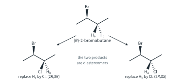
Optical activity and specific rotation
Topic 11.1 Part 2 showed how chiral compounds are recognised: one enantiomer rotates the plane of plane-polarised light clockwise (looking towards the light source) and is dextrorotatory, (+); the other rotates it by the same angle anticlockwise and is laevorotatory, (−). A racemic mixture gives no rotation. The angle is measured in a polarimeter (Fig 28): light from a sodium lamp is plane-polarised, passes through a tube of the sample, and the analyser is turned until the light is again at its brightest (or darkest). The angle turned is the observed rotation, α.
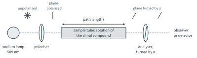
The observed rotation of a sample depends on
- the compound (and which enantiomer);
- its concentration, c: twice as many molecules in the beam, twice the rotation;
- the path length, l, of the tube, for the same reason;
- the wavelength of the light (usually 589 nm, the sodium D line, H3.1 Part 2), the temperature (usually 20 °C) and the solvent.
To compare compounds we therefore use the specific rotation, the rotation scaled to a path length of 1 dm and a concentration of 1 g cm−3:
[α] in degrees, α observed rotation / °, l path length / dm, c concentration / g cm−3
For a pure liquid ("neat"), c is replaced by its density, ρ, in g cm−3. Specific rotations are written [α]D20 (D for the sodium line, 20 for 20 °C) and quoted in degrees, with the solvent and concentration in brackets.56 The table gives the literature values used in this Part.
| Compound | [α]D20 / ° | Conditions |
|---|---|---|
| (R)-carvone | −61 | neat (density 0.960 g cm−3) |
| (S)-carvone | +61 | neat |
| (R)-butan-2-ol | −13.5 | neat |
| (S)-butan-2-ol | +13.5 | neat |
| (S)-alanine | about +14.5 | c = 0.10 g cm−3, in hydrochloric acid |
| (2R,3R)-tartaric acid | about +12 | in water (Further example) |
Alanine shows why the conditions matter: its specific rotation in hydrochloric acid is much larger than in water, because the solvent changes the form the molecule is in. A specific rotation is meaningless without its solvent and concentration.
Optical purity and enantiomeric excess
A sample that is mostly one enantiomer, with some of the other, rotates less than the pure enantiomer, because the minor enantiomer cancels the rotation of an equal amount of the major one. 9813 defines:
Use the magnitudes of the rotations (ignore the signs) when the sample is the enantiomer with the negative rotation. Optical purity is taken as equal to the enantiomeric excess:7
ee = (major − minor) / (major + minor) × 100 % = % major − % minor
% major = (100 + optical purity) / 2 % minor = (100 − optical purity) / 2
An optical purity of 80 % means "80 % pure enantiomer plus 20 % racemic mixture", and the racemic 20 % is half each: the sample is 80 + 10 = 90 % major and 10 % minor, 90 : 10.
Worked example 8: alanine in hydrochloric acid
2.50 g of a sample of (S)-alanine is dissolved in hydrochloric acid and made up to 25.0 cm3. In a 2.00 dm tube the observed rotation is +2.61° (illustrative data). [α] of pure (S)-alanine under these conditions is +14.5 (literature value). Calculate the optical purity and the percentage of each enantiomer.
(To answer this, you have to find c in g cm−3, then [α]obs, then compare it with [α]pure.)
c = 2.50 / 25.0 = 0.100 g cm−3
[α]obs = α / (l × c) = 2.61 / (2.00 × 0.100) = +13.05
optical purity = 13.05 / 14.5 × 100 % = 90.0 %
(S) = (100 + 90.0) / 2 = 95.0 %; (R) = (100 − 90.0) / 2 = 5.0 %
Worked example 9: neat carvone
A sample of carvone extracted from spearmint is placed, neat, in a 1.00 dm tube and gives α = −52.7° (illustrative data). The density of carvone is 0.960 g cm−3. Using [α] = −61 for pure (R)-carvone, find the optical purity and the composition.
(To answer this, you have to use the density in place of c, and the magnitudes of the rotations.)
[α]obs = −52.7 / (1.00 × 0.960) = −54.9
optical purity = 54.9 / 61 × 100 % = 90.0 %
(R) = (100 + 90.0) / 2 = 95.0 %; (S) = 5.0 %
Worked example 10: from composition to rotation
A sample of butan-2-ol contains 70.0 % (S) and 30.0 % (R). What specific rotation should it show (neat)? [α] of (S)-butan-2-ol = +13.5 (literature value).
(To answer this, you have to work backwards: ee first, then the fraction of the full rotation.)
ee = 70.0 − 30.0 = 40.0 % = optical purity
[α] = +13.5 × 40.0 / 100 = +5.40
Stereoisomerism in transition element complexes
Topic 13 Part 2 introduced complexes: a central metal ion bonded to ligands by dative covalent bonds, with a coordination number and a shape (octahedral, bond angles 90°; tetrahedral, 109.5°). 9813 asks us to recognise that complexes, too, show stereoisomerism. Two new ideas are needed first.
- Square planar complexes: four ligands at the corners of a square around the metal ion, all in one plane, with bond angles of 90°. Platinum(II) complexes are commonly square planar.
- Bidentate ligands: a ligand that forms two dative bonds to the same metal ion, from two different donor atoms. The one in 9813 is ethane-1,2-diamine, H2NCH2CH2NH2, abbreviated en (Fig 29).
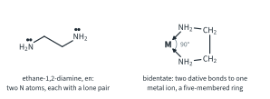
Each N atom of en has a lone pair, and both lone pairs bond to the same metal ion, closing a five-membered ring (M, N, C, C, N). The two N atoms are close together, so en can only reach two cis (adjacent, 90°) positions of a complex, never two trans positions. Counting dative bonds, not ligands: [Ni(H2NCH2CH2NH2)3]2+, written [Ni(en)3]2+, has three ligands but coordination number 6, and it is octahedral. en is neutral, so the nickel in [Ni(en)3]2+ is Ni2+.
As for organic molecules, complexes show two kinds of stereoisomerism: cis-trans isomerism and enantiomerism.8
Cis-trans isomers of complexes
In square planar [Pt(NH3)2Cl2], the two Cl ligands can be next to each other (cis, Cl–Pt–Cl 90°) or opposite each other (trans, 180°) (Fig 30). In octahedral [Co(NH3)4(H2O)2]2+ the two H2O ligands can likewise be at 90° (cis) or 180° (trans). No rotation can turn one into the other without breaking bonds, so each pair are different compounds, diastereomers.
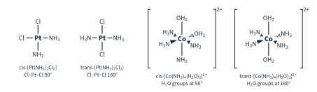
All four are achiral. The platinum complexes are flat, so the plane of the molecule is a plane of symmetry. Each cobalt complex has a plane of symmetry passing through the Co and the O atoms of both H2O ligands.
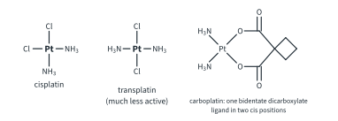
Enantiomers of complexes
[Ni(en)3]2+ has three en ligands, each spanning two cis positions of the octahedron. Look at the complex along the axis through the middle of two opposite faces of the octahedron, and the three rings look like the blades of a propeller. The complex has no plane of symmetry, and its mirror image is a propeller of the opposite twist: the two are non-superimposable, a pair of enantiomers (Fig 32).
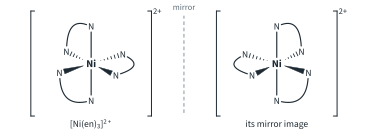
[Ni(en)2(H2O)2]2+ shows both kinds of stereoisomerism (Fig 33):
- in the trans isomer the two H2O ligands are opposite each other and both en ligands lie in one plane with the Ni. That plane, containing Ni and the four N atoms, is a plane of symmetry: the trans isomer is achiral;
- in the cis isomer the two H2O ligands are at 90°. There is no plane of symmetry, and the cis isomer exists as a pair of enantiomers.
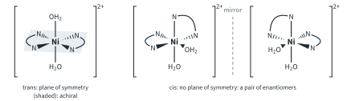
So [Ni(en)2(H2O)2]2+ has three stereoisomers: trans, and the two cis enantiomers.9
Worked example 11: the four complexes named in 9813
For each complex, state its shape, its stereoisomers and whether each is chiral.
(To answer this, you have to draw each arrangement, then build or imagine its mirror image and try every rotation to see whether the two can be superimposed. Complex isomers in the lab does this and reports how closely the best rotation fits, in nm.)
| Complex | Shape | Stereoisomers | Chiral? |
|---|---|---|---|
| [Pt(NH3)2Cl2] | square planar | 2: cis and trans | both achiral (flat) |
| [Co(NH3)4(H2O)2]2+ | octahedral | 2: cis and trans | both achiral |
| [Ni(en)3]2+ | octahedral | 2: a pair of enantiomers | chiral |
| [Ni(en)2(H2O)2]2+ | octahedral | 3: trans, and a cis pair of enantiomers | trans achiral; cis chiral |
Summary
The kinds of isomerism of this chapter.
| Type | How they interconvert | Physical properties | Example |
|---|---|---|---|
| Constitutional isomers | only by breaking bonds | different | butan-1-ol and butan-2-ol |
| Conformational isomers | by rotation about single bonds or a ring flip; rapidly at room temperature | cannot be separated | anti and gauche butane; the two chairs of methylcyclohexane |
| cis-trans isomers (E/Z) | only by breaking bonds | different (diastereomers) | (E)- and (Z)-but-2-ene; cis- and trans-1,4-dimethylcyclohexane; cis- and trans-[Pt(NH3)2Cl2] |
| Enantiomers | only by breaking bonds | identical, except the direction of rotation and interactions with chiral molecules | (R)- and (S)-carvone; the two [Ni(en)3]2+ |
| Diastereomers (not cis-trans) | only by breaking bonds | different | (2R,3R)- and (2R,3S)-2-bromo-3-chlorobutane |
| Meso compound | (one compound) | optically inactive | (2R,3S)-2,3-dibromobutane; cis-1,2-dimethylcyclohexane |
Additional information
- Beyond the syllabus: if two attached atoms are isotopes of the same element, the heavier ranks higher (D above H). ↩
- For alkenes with one H on each carbon of the C=C, the H–H coupling constant in the 1H NMR spectrum tells cis from trans: about 12–18 Hz for trans and 6–12 Hz for cis (literature values; H3.3 Part 2). ↩
- "Chiral centre" is the 9476 and 9813 term; many books say "stereocentre". ↩
- Beyond the syllabus: carbons like C1 and C4 of 1,4-dimethylcyclohexane, which are not chiral centres but still carry the cis-trans isomerism, are sometimes labelled with lower-case r or s. ↩
- Strictly, the units of [α] are ° dm−1 cm3 g−1; by custom only degrees are written. ↩
- Some tables give c in g per 100 cm3; then [α] = 100α / (l × c). This chapter and its lab always use g cm−3. ↩
- This assumes that the rotation is proportional to the excess of one enantiomer, which is usually true; small deviations are known. ↩
- Complexes such as [Co(NH3)3Cl3] have two further arrangements, called fac and mer; identifying them is not required in 9813. ↩
- Real en rings are slightly puckered, not flat; this is ignored here (beyond the syllabus). It does not change which complexes are chiral. ↩